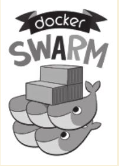
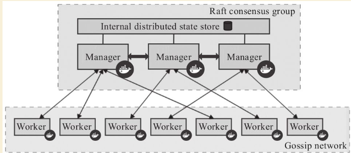

Contents
Docker三剑客之Docker-Swarm¶
Docker-swarm¶
Docker Swarm是Docker官方编排(Orchestration)项目之一,负责对Docker集群进行管理。

作为容器集群管理器,swarm 最大的优势之一就是原生支持API,给用户使用带来极大的便利。 各种基于标准API的工具比如Compose、Docker SDK、各种管理软件，
甚至Docker本身等都可以很容易的与swarm进行集成。这大大方便了用户将原先基于单节点的 系统移植到Swarm上。同时swarm内置了对Docker网络插件的支持,用户可以很容易地部署跨主机的容器集群服务。
Swarm采用了经典的“主从”结构，通过Raft协议来在多个管理节点（Manager）中实现共识, 工作节点(Worker)上运行agent接受管理节点的统一管理和任务分配。
用户提交服务请求只需要发给管理节点即可，管理节点会安装调度策略在机器中分配节点来运行服务相关的任务。

基本概念¶
1.Swarm 集群¶
Swarm 集群（ Cluster ） 为一组被统一管理起来的Docker 主机。集群是Swarm 所管理的
对象。这些主机通过Docker 引擎的模式相互沟通,其中部分主机可能作为管理节点
（ manager) 响应外部的管理请求,其他主机作为工作节点（ worker) 来实际运行Docker 容器。
当然,同一个主机也可以即作为管理节点， 同时作为工作节点。
当用户使用swarm 集群时,首先定义一个服务（ 指定状态、复制个数、网络、存储、暴
露端口等）,然后通过管理节点发出启动服务的指令， 管理节点随后会按照指定的服务规则进
行调度,在集群中启动起来整个服务,并确保它正常运行。
2.节点¶
节点（ Node ） 是Swarm 集群的最小资源单位。每个节点实际上都是一台Docker 主机。
Swarm 集群中节点分为两种：
囗 管理节点（ manager node ） ： 负责响应外部对集群的操作请求， 并维持集群中资源，
分发任务给工作节点。
同时， 多个管理节点之间通过R 祖协议构成共识。一般推荐每个集群设置5 个或7 个管理节点；
囗 工作节点（ worker node ） ： 负责执行管理节点安排的具体任务。默认情况下， 管理节
点自身也同时是工作节点。每个工作节点上运行代理（ agent ） 来汇报任务完成情况。
用户可以通过docker node promote 命令来提升一个工作节点为管理节点； 或者通过
docker node demote 命令来将一个管理节点降级为工作节点。
3.服务¶
服务（ Service ） 是Docker 支持复杂多容器协作场景的利器。
一个服务可以由若干个任务组成， 每个任务为某个具体的应用。服务还包括对应的存储、网络、端口映射、副本个数、访问配置、升级配置等附加参数。
一般来说， 服务需要面向特定的场景， 例如一个典型的web 服务可能包括前端应用、后端应用， 以及数据库等。这些应用都属于该服务的管理范畴。
Swarm 集群中服务类型也分为两种（ 可以通过-mode 指定） ：
囗 复制服务（ replicated services ） 模式： 默认模式， 每个任务在集群中会存在若干副本，
这些副本会被管理节点按照调度策略分发到集群中的工作节点上。此模式下可以使用-replicas 参数设置副本数量；
囗 全局服务（ global services ） 模式： 调度器将在每个可用节点都执行一个相同的任务。
该模式适合运行节点的检查， 如监控应用等。
4 .任务¶
任务是swarm 集群中最小的调度单位， 即一个指定的应用容器。例如仅仅运行前端业务的前端容器。
任务从生命周期上将可能处于创建（ NEW) 、等待（ PENDING) 、分配（ ASSIGNED) 、接受（ ACCEPTED) 、准备（ PREPARING ） 、开始（ STARTING) 、运行
(RUNNING ） 、完成(COMPLETE ） 、失败(FAILED ） 、关闭（ SHUTDOWN) 、拒绝(REJECTED ） 、孤立（ ORPHANED ） 等不同状态。
swarm 集群中的管理节点会按照调度要求将任务分配到工作节点上。例如指定副本为2
时， 可能会被分配到两个不同的工作节点上。一旦当某个任务被分配到一个工作节点， 将无
法被转移到另外的工作节点， 即swarm 中的任务不支持迁移。
使用Swarm¶
用户在安装Docker 1.12或更新的版本后，即可直接尝试Swarm模式的相关功能。假定分别准备两个Linux主机，作为管理节点（实际上也同时具备工作节点功能）和工作节点。
Swarm集群的主要操作，包括：
囗 swarm init: 在管理节点上创建一个集群；
囗 node 1ist： 列出集群中的节点信息；
囗 swarm join: 加人一个新的节点到已有集群中；
囗 swarm update ： 更新一个Swarm 集群；
囗 swarm leave ： 离开一个Swarm 集群。
此外， 还可以使用docker service命令部署Docker应用服务到集群中；
1.创建集群¶
[root@172-16-72-20 centos]# docker swarm init --advertise-addr 172.16.72.20
Swarm initialized: current node (qtbcvtilbdk1yry0y3ji0jejm) is now a manager.
To add a worker to this swarm, run the following command:
docker swarm join --token SWMTKN-1-34puzsk7pznuagjojdvj6zbzq10px8h4h43vcl4l3v5zxbm79q-2jd79domv5d1e16hz0uurs8k5 172.16.72.20:2377
To add a manager to this swarm, run 'docker swarm join-token manager' and follow the instructions.
swarm初始化，集群初始化子命令的相关选项：docker swarm init
2.查看集群信息¶
[root@172-16-72-20 centos]# docker info
.....
Swarm: active
NodeID: qtbcvtilbdk1yry0y3ji0jejm
Is Manager: true
ClusterID: 6s6x1shrxc7d2y30j9rj12tep
Managers: 1
Nodes: 1
Orchestration:
Task History Retention Limit: 5
Raft:
Snapshot Interval: 10000
Number of Old Snapshots to Retain: 0
Heartbeat Tick: 1
Election Tick: 10
Dispatcher:
Heartbeat Period: 5 seconds
CA Configuration:
Expiry Duration: 3 months
Force Rotate: 0
Autolock Managers: false
Root Rotation In Progress: false
Node Address: 172.16.72.20
Manager Addresses:
172.16.72.20:2377
Runtimes: runc
Default Runtime: runc
Init Binary: docker-init
containerd version: 773c489c9c1b21a6d78b5c538cd395416ec50f88
runc version: 4fc53a81fb7c994640722ac585fa9ca548971871
init version: 949e6fa
Security Options:
seccomp
Profile: default
Kernel Version: 3.10.0-957.27.2.el7.x86_64
Operating System: CentOS Linux 7 (Core)
OSType: linux
Architecture: x86_64
CPUs: 4
Total Memory: 7.638GiB
Name: 172-16-72-20
ID: 2OOX:3QAW:QVBG:6ZHF:RPNM:IHXF:ZC2F:QWFO:5JTT:CZMQ:P7WZ:U7XZ
Docker Root Dir: /var/lib/docker
Debug Mode (client): false
Debug Mode (server): false
Registry: https://index.docker.io/v1/
Labels:
Experimental: false
Insecure Registries:
119.254.93.246:15005
127.0.0.0/8
Live Restore Enabled: false
WARNING: bridge-nf-call-ip6tables is disabled
3.加入集群¶
[root@172-16-72-15 centos]# docker swarm join --token SWMTKN-1-34puzsk7pznuagjojdvj6zbzq10px8h4h43vcl4l3v5zxbm79q-2jd79domv5d1e16hz0uurs8k5 172.16.72.20:2377
This node joined a swarm as a worker.
[root@172-16-72-29 centos]# docker swarm join --token SWMTKN-1-34puzsk7pznuagjojdvj6zbzq10px8h4h43vcl4l3v5zxbm79q-2jd79domv5d1e16hz0uurs8k5 172.16.72.20:2377
This node joined a swarm as a worker.
加入集群的子命令：docker swarm join包含是个子选项
4.管理添加节点的口令¶
[root@swarm1 docker_swarm]# docker swarm join-token --rotate manager
Successfully rotated manager join token.
To add a manager to this swarm, run the following command:
docker swarm join --token SWMTKN-1-0ug4ffl4d918qa8xc3q3ynujvqoby5qjhug6mdyq03c1lgg64w-cdserqy6fyxlzd6pgapkjewd4 172.16.74.33:2377
[root@swarm1 docker_swarm]# docker swarm join-token -q manager
SWMTKN-1-0ug4ffl4d918qa8xc3q3ynujvqoby5qjhug6mdyq03c1lgg64w-cdserqy6fyxlzd6pgapkjewd4
在管理节点上查看集群中节点的情况，可以看到新加入的工作节点。
[root@172-16-72-20 centos]# docker node ls
ID HOSTNAME STATUS AVAILABILITY MANAGER STATUS ENGINE VERSION
8w1cozqwakizb1vnxuzkvn6dn 172-16-72-15 Ready Active 18.03.1-ce
qtbcvtilbdk1yry0y3ji0jejm * 172-16-72-20 Ready Active Leader 18.03.1-ce
4lt3j0n671tiswnt3kigazf58 172-16-72-29 Ready Active 18.03.1-ce
============================================ 下线节点 ===========================================
温馨提示：更改节点的availablity状态
swarm集群中node的availability状态可以为 active或者drain，其中：
active状态下，node可以接受来自manager节点的任务分派；
drain状态下，node节点会结束task，且不再接受来自manager节点的任务分派（也就是下线节点）
[root@172-16-72-19 centos]# docker node update --availability drain ftnode-172-16-72-8
ftnode-172-16-72-8
[root@172-16-72-19 centos]# docker node ls
ID HOSTNAME STATUS AVAILABILITY MANAGER STATUS ENGINE VERSION
3d1iieyvw8q7q2u2i95schbkn * 172-16-72-19 Ready Active Leader 19.03.5
kdp5b8ja34x52a4v2xc5byhrd ftnode-172-16-72-8 Ready Drain 19.03.5
3pqduino59ug7ujhokzph874t ftnode-172-16-72-20 Ready Active
============================================ 上线节点 ===========================================
如上，当node1的状态改为drain后，那么该节点就不会接受task任务分发，就算之前已经接受的任务也会转移到别的节点上。
再次修改为active状态（及将下线的节点再次上线）
[root@172-16-72-19 centos]# docker node update --availability active ftnode-172-16-72-8
ftnode-172-16-72-8
[root@172-16-72-19 centos]# docker node ls
ID HOSTNAME STATUS AVAILABILITY MANAGER STATUS ENGINE VERSION
3d1iieyvw8q7q2u2i95schbkn * 172-16-72-19 Ready Active Leader 19.03.5
kdp5b8ja34x52a4v2xc5byhrd ftnode-172-16-72-8 Ready Active 19.03.5
3pqduino59ug7ujhokzph874t ftnode-172-16-72-20 Ready Active 19.03.5
7,使用集群服务¶
使用swarm 提供的服务实际上有两种方法，
· 一种是使用Docker 原来的客户端命令， 只要指定使用Swarm manager 服务的监听地址即可。 例如,manager服务监听的地址为:2377则可以通过指定-H :2377选项来继续使用Docker客户端, 执行任意Docker命令， 例如ps 、info 、run 等。
· 另外一种方法， 也是推荐的做法， 是使用新的docker service 命令， 可以获得包括多主机网络等更高级的特性支持。
service命令及说明
(1)快速创建一个应用服务，2副本
[root@172-16-72-20 centos]# docker service create --replicas 2 --name ping_app debian:jessie ping docker.com
yfkves1nfm3j3hjvojwvybjnu
overall progress: 2 out of 2 tasks
1/2: running [==================================================>]
2/2: running [==================================================>]
verify: Service converged
(2)查看服务
[root@172-16-72-20 centos]# docker service ls
ID NAME MODE REPLICAS IMAGE PORTS
yfkves1nfm3j ping_app replicated 2/2 debian:jessie
使用docker service inspect命令查看服务的具体信息
[root@172-16-72-20 centos]# docker service inspect --pretty ping_app
ID: yfkves1nfm3j3hjvojwvybjnu
Name: ping_app
Service Mode: Replicated
Replicas: 2
Placement:
UpdateConfig:
Parallelism: 1
On failure: pause
Monitoring Period: 5s
Max failure ratio: 0
Update order: stop-first
RollbackConfig:
Parallelism: 1
On failure: pause
Monitoring Period: 5s
Max failure ratio: 0
Rollback order: stop-first
ContainerSpec:
Image: debian:jessie@sha256:8fc7649643ca1acd3940706613ea7b170762cfce6e7955a6afb387aa40e9f9ea
Args: ping docker.com
Resources:
Endpoint Mode: vip
可以看到管理节点和工作节点都运行了一个容器，镜像为debian:jessie，命令为：ping docker.com
[root@172-16-72-20 centos]# docker service ps ping_app
ID NAME IMAGE NODE DESIRED STATE CURRENT STATE ERROR PORTS
kxv54iqeaoik ping_app.1 debian:jessie 172-16-72-20 Running Running 2 minutes ago
jwpovkw9t2tv ping_app.2 debian:jessie 172-16-72-29 Running Running 2 minutes ago
(2)扩展服务 用户还可以通过docker service scale = 命令来对服务进行伸缩，例如将服务复制个数从2改为1：
[root@172-16-72-20 centos]# docker service scale ping_app=1
ping_app scaled to 1
overall progress: 1 out of 1 tasks
1/1: running [==================================================>]
verify: Service converged
再次查看，仅剩下管理节点运行了此容器
[root@172-16-72-20 centos]# docker service ps ping_app
ID NAME IMAGE NODE DESIRED STATE CURRENT STATE ERROR PORTS
kxv54iqeaoik ping_app.1 debian:jessie 172-16-72-20 Running Running 5 minutes ago
服务使用完成后可以通过docker service rm <SERVERCE-ID> 命令来进行删除。
服务命令更多的参数可以通过docker service help 进行查看。
删除容器
[root@172-16-72-20 centos]# docker service ls
ID NAME MODE REPLICAS IMAGE PORTS
yfkves1nfm3j ping_app replicated 1/1 debian:jessie
[root@172-16-72-20 centos]# docker service rm yfkves1nfm3j
yfkves1nfm3j
(3)使用外部服务地址 Swarm通过路由机制支持服务对外映射到指定端口，该端口可以在集群中任意节点上进行访问，即使该节点上没有运行服务实例， 需要在创建服务时使用–publih参数。
docker servi ce \
—name <Service name> \
—publ i sh publ i shed=<pub port>,target=<container port> \
< IMAGE>
5.更新集群¶
用户可以使用docker s warm update [OPT 工ONS] 命令来更新一个集群， 主要包
括如下配置信息：
囗 -autolock: 启动或关闭自动锁定；
口 -cert-expiry duration: 根证书的过期时长， 默认为90 天；
囗 -dispatcher-heartbeat duration ： 分配组件的心跳时长， 默认为5 秒；
囗 -external-ca external-ca ： 指定使用外部的证书签名服务地址；
囗 -max-snapshots uint ： Raft 协议快照保留的个数；
囗 -snapshot-interval uint ： Raft 协议进行快照的间隔（ 单位为事务个数） ， 默认为10 000 个事物；
囗 -task-history-limlt int ： 任务历史的保留个数,默认为5 。
6.离开集群¶
节点可以在任何时候通过swarm leave 命令离开一个集群。命令格式为docker swarm leave [OPTIONS) ,支持 -f, --force 意味着强制离开集群。
Docker Stack命令¶
Docker栈的命令，它一共包含五个子命令，
[root@swarm1 docker_swarm]# docker stack --help
Usage: docker stack [OPTIONS] COMMAND
Manage Docker stacks
Options:
--orchestrator string Orchestrator to use (swarm|kubernetes|all)
Commands:
deploy Deploy a new stack or update an existing stack
ls List stacks
ps List the tasks in the stack
rm Remove one or more stacks
services List the services in the stack
部署Docker栈
用法：docker stack deoloy [OPTIONS] STACK
选项解释如下：
· -- bundle-file：指定一个分布式应用程序包的文件路径。
· -- compose-file：-c ：指定一个Compose文件路径。
· -- with-registry-auth: 将镜像仓库的认证信息发送给Swarm代理程序，用于指定部署时可以从私有仓库拉取镜像（默认为false）。
在Swarm中部署服务(nginx为例)¶
## 查看docker网络
[root@ftnode-172-16-72-19 compose]# docker network ls
NETWORK ID NAME DRIVER SCOPE
6bb766eb4b70 bridge bridge local
m5y53850puxn deplpy_deamon_default overlay swarm
8d8ffd50eaf9 host host local
4oal2fahquva ingress overlay swarm
bbfafab744b8 none null local
- 创建网络在部署服务
# 创建网络
[root@ftnode-172-16-72-19 compose]# docker network create -d overlay nginx_net
weqsqoenuhr1qt6o30odfp83n
# 部署服务
[root@ftnode-172-16-72-19 compose]# docker network ls | grep nginx_net
weqsqoenuhr1 nginx_net overlay swarm
#在manager-node节点上使用上面这个覆盖网络创建nginx服务：
#其中，--replicas 参数指定服务由几个实例组成。
#注意：不需要提前在节点上下载nginx镜像，这个命令执行后会自动下载这个容器镜像（比如此处创建tomcat容器，就将下面命令中的镜像改为tomcat镜像）。
[root@172-16-72-19 compose]# docker service create --name hu_nginx --replicas 3 nginx
xmmwyaw2dkovyk1iy42n0zi68
overall progress: 3 out of 3 tasks
1/3: running [==================================================>]
2/3: running [==================================================>]
3/3: running [==================================================>]
# 使用 docker service ls 查看正在运行服务的列表
[root@172-16-72-19 compose]# docker service ls
ID NAME MODE REPLICAS IMAGE PORTS
xmmwyaw2dkov hu_nginx replicated 3/3 nginx:latest
- 查询Swarm中服务的信息
-pretty 使命令输出格式化为可读的格式，不加 --pretty 可以输出更详细的信息
[root@172-16-72-19 compose]# docker service inspect --pretty hu_nginx
ID: xmmwyaw2dkovyk1iy42n0zi68
Name: hu_nginx
Service Mode: Replicated
Replicas: 3
Placement:
UpdateConfig:
Parallelism: 1
On failure: pause
Monitoring Period: 5s
Max failure ratio: 0
Update order: stop-first
RollbackConfig:
Parallelism: 1
On failure: pause
Monitoring Period: 5s
Max failure ratio: 0
Rollback order: stop-first
ContainerSpec:
Image: nginx:latest@sha256:b2d89d0a210398b4d1120b3e3a7672c16a4ba09c2c4a0395f18b9f7999b768f2
Init: false
Resources:
Endpoint Mode: vip
# 查询到哪个节点正在运行该服务。如下该容器被调度到manager-node节点上启动了，然后访问http://192.168.31.43即可访问这个容器应用（如果调度到其他节点，访问也是如此）
[root@172-16-72-19 compose]# docker service ps hu_nginx
ID NAME IMAGE NODE DESIRED STATE CURRENT STATE ERROR PORTS
p08tcvzbhlt6 hu_nginx.1 nginx:latest ftnode-172-16-72-8 Running Running 2 minutes ago
jcqgq8fjsi6m hu_nginx.2 nginx:latest 172-16-72-19 Running Running 2 minutes ago
d4vsmgnk7n0e hu_nginx.3 nginx:latest ftnode-172-16-72-20 Running Running 2 minutes ago
温馨提示：如果上面命令执行后，上面的 STATE 字段中刚开始的服务状态为 Preparing，需要等一会才能变为 Running 状态，其中最费时间的应该是下载镜像的过程
- 在Swarm中动态扩展服务(scale)
当然，如果只是通过service启动容器，swarm也算不上什么新鲜东西了。Service还提供了复制（类似kubernetes里的副本）功能。可以通过 docker service scale 命令来设置服务中容器的副本数
比如将上面的my_nginx容器动态扩展到4个
[root@172-16-72-19 compose]# docker service scale hu_nginx=4
hu_nginx scaled to 4
overall progress: 4 out of 4 tasks
1/4: running [==================================================>]
2/4: running [==================================================>]
3/4: running [==================================================>]
4/4: running [==================================================>]
verify: Service converged
[root@172-16-72-19 compose]# docker service ps hu_nginx
ID NAME IMAGE NODE DESIRED STATE CURRENT STATE ERROR PORTS
p08tcvzbhlt6 hu_nginx.1 nginx:latest ftnode-172-16-72-8 Running Running 4 minutes ago
jcqgq8fjsi6m hu_nginx.2 nginx:latest 172-16-72-19 Running Running 4 minutes ago
d4vsmgnk7n0e hu_nginx.3 nginx:latest ftnode-172-16-72-20 Running Running 4 minutes ago
trc0i8rdim8g hu_nginx.4 nginx:latest 172-16-72-19 Running Running 14 seconds ago
[root@172-16-72-19 compose]# docker ps
CONTAINER ID IMAGE COMMAND CREATED STATUS PORTS NAMES
b292c2181ef6 nginx:latest "nginx -g 'daemon of…" About a minute ago Up About a minute 80/tcp hu_nginx.4.trc0i8rdim8g3i841gnc3b3wy
60cad56c7845 nginx:latest "nginx -g 'daemon of…" 5 minutes ago Up 5 minutes 80/tcp hu_nginx.2.jcqgq8fjsi6mmltj3ozc65rgw
这4个副本的hu_nginx容器分别运行在这三个节点上，登陆这三个节点，就会发现已经存在运行着的hu_nginx容器
172-16-72-19 上运行着2个nginx服务。
# 将容器在集群中减少为2个。
[root@172-16-72-19 compose]# docker service scale hu_nginx=2
hu_nginx scaled to 2
overall progress: 2 out of 2 tasks
1/2: running [==================================================>]
2/2: running [==================================================>]
verify: Service converged
- 模拟宕机node节点
docker容器会自动迁移
# 先保证每个节点上启动一个docker
[root@172-16-72-19 compose]# docker service ps hu_nginx
ID NAME IMAGE NODE DESIRED STATE CURRENT STATE ERROR PORTS
p08tcvzbhlt6 hu_nginx.1 nginx:latest ftnode-172-16-72-8 Running Running 10 minutes ago
jcqgq8fjsi6m hu_nginx.2 nginx:latest 172-16-72-19 Running Running 9 minutes ago
ruq4sr0s5xx0 hu_nginx.3 nginx:latest ftnode-172-16-72-20 Running Running 27 seconds ago
# 在node 20这台机器上，模拟宕机
[root@ftnode-172-16-72-20 centos]# systemctl stop docker
[root@172-16-72-19 compose]# docker node ls
ID HOSTNAME STATUS AVAILABILITY MANAGER STATUS ENGINE VERSION
3d1iieyvw8q7q2u2i95schbkn * 172-16-72-19 Ready Active Leader 19.03.5
kdp5b8ja34x52a4v2xc5byhrd ftnode-172-16-72-8 Ready Active 19.03.5
3pqduino59ug7ujhokzph874t ftnode-172-16-72-20 Down Active 19.03.5
# 过一会儿查看docker容器的列表，发现容器已经迁移到19上了。
[root@172-16-72-19 compose]# docker service ps hu_nginx
ID NAME IMAGE NODE DESIRED STATE CURRENT STATE ERROR PORTS
p08tcvzbhlt6 hu_nginx.1 nginx:latest ftnode-172-16-72-8 Running Running 11 minutes ago
jcqgq8fjsi6m hu_nginx.2 nginx:latest 172-16-72-19 Running Running 11 minutes ago
mijhlis5ap3z hu_nginx.3 nginx:latest 172-16-72-19 Running Running 28 seconds ago
ruq4sr0s5xx0 \_ hu_nginx.3 nginx:latest ftnode-172-16-72-20 Shutdown Running 47 seconds ago
[root@172-16-72-19 compose]# docker ps -a
CONTAINER ID IMAGE COMMAND CREATED STATUS PORTS NAMES
91376bb956b3 nginx:latest "nginx -g 'daemon of…" 3 minutes ago Up 3 minutes 80/tcp hu_nginx.3.mijhlis5ap3zzscieunqxk2h8
60cad56c7845 nginx:latest "nginx -g 'daemon of…" 13 minutes ago Up 13 minutes 80/tcp hu_nginx.2.jcqgq8fjsi6mmltj3ozc65rgw
# 将转移过来的docker容器关闭，模拟容器故障。因为设置了--replicas 3 nginx,所以集群无论如何都要保证3个容器在运行
[root@172-16-72-19 compose]# docker ps
CONTAINER ID IMAGE COMMAND CREATED STATUS PORTS NAMES
91376bb956b3 nginx:latest "nginx -g 'daemon of…" 5 minutes ago Up 5 minutes 80/tcp hu_nginx.3.mijhlis5ap3zzscieunqxk2h8
60cad56c7845 nginx:latest "nginx -g 'daemon of…" 16 minutes ago Up 16 minutes 80/tcp hu_nginx.2.jcqgq8fjsi6mmltj3ozc65rgw
[root@172-16-72-19 compose]# docker stop 91376bb956b3
91376bb956b3
可以看到，当docker容器出现故障时，集群会自动再次拉起一个容器，保证有3个容器运行。图上是从自身node上拉起了一个docker容器。
结论：即在swarm cluster集群中启动的容器，在worker node节点上删除或停用后，该容器会自动转移到其他的worker node节点上
- Swarm 动态缩容服务(scale)
同理，swarm还可以缩容，同样是使用scale命令
如下，将hu_nginx容器变为1个
[root@172-16-72-19 compose]# docker service scale hu_nginx=1
hu_nginx scaled to 1
overall progress: 1 out of 1 tasks
1/1:
verify: Service converged
[root@172-16-72-19 compose]# docker service ls
ID NAME MODE REPLICAS IMAGE PORTS
xmmwyaw2dkov hu_nginx replicated 1/1 nginx:latest
[root@172-16-72-19 compose]# docker service ps hu_nginx
ID NAME IMAGE NODE DESIRED STATE CURRENT STATE ERROR PORTS
p08tcvzbhlt6 hu_nginx.1 nginx:latest ftnode-172-16-72-8 Running Running 23 minutes ago
mijhlis5ap3z hu_nginx.3 nginx:latest 172-16-72-19 Shutdown Complete 5 minutes ago
ruq4sr0s5xx0 \_ hu_nginx.3 nginx:latest ftnode-172-16-72-20 Shutdown Running 11 minutes ago
# 通过docker service ps my_nginx 可以看到node节点上已经为Shutdown状态了
# 登录node节点，使用docker ps -a 查看，会发现容器被stop而非rm
[root@172-16-72-19 compose]# docker ps -a
CONTAINER ID IMAGE COMMAND CREATED STATUS PORTS NAMES
91376bb956b3 nginx:latest "nginx -g 'daemon of…" 13 minutes ago Exited (0) 7 minutes ago hu_nginx.3.mijhlis5ap3zzscieunqxk2h8
- 除了上面使用scale进行容器的扩容或缩容之外，还可以使用docker service update 命令。 可对 服务的启动 参数 进行 更新/修改。
[root@172-16-72-19 compose]# docker service update --replicas 3 hu_nginx
[root@172-16-72-19 compose]# docker service ls
ID NAME MODE REPLICAS IMAGE PORTS
xmmwyaw2dkov hu_nginx replicated 3/3 nginx:latest
[root@172-16-72-19 compose]# docker service ps hu_nginx
ID NAME IMAGE NODE DESIRED STATE CURRENT STATE ERROR PORTS
p08tcvzbhlt6 hu_nginx.1 nginx:latest ftnode-172-16-72-8 Running Running 26 minutes ago
zeh83i6cf2p0 hu_nginx.2 nginx:latest ftnode-172-16-72-20 Running Running about a minute ago
zy686nu1eu9q hu_nginx.3 nginx:latest 172-16-72-19 Running Running about a minute ago
mijhlis5ap3z \_ hu_nginx.3 nginx:latest 172-16-72-19 Shutdown Complete 9 minutes ago
ruq4sr0s5xx0 \_ hu_nginx.3 nginx:latest ftnode-172-16-72-20 Shutdown Shutdown 2 minutes ago
# docker service update 命令，也可用于直接 升级 镜像等
docker service update --image nginx:new hu_nginx
Swarm中使用Volume(挂在目录，mount命令)¶
- 查看volume的帮助信息
[root@172-16-72-19 compose]# docker volume --help
Usage: docker volume COMMAND
Manage volumes
Commands:
create Create a volume
inspect Display detailed information on one or more volumes
ls List volumes
prune Remove all unused local volumes
rm Remove one or more volumes
- 创建一个volume
[root@172-16-72-19 compose]# docker volume create --name testvolume
testvolume
# 查看创建的volume
[root@172-16-72-19 compose]# docker volume ls
DRIVER VOLUME NAME
local testvolume
# 查看volume详情
[root@172-16-72-19 compose]# docker volume inspect testvolume
[
{
"CreatedAt": "2020-01-09T09:39:44Z",
"Driver": "local",
"Labels": {},
"Mountpoint": "/var/lib/docker/volumes/testvolume/_data",
"Name": "testvolume",
"Options": {},
"Scope": "local"
}
]
- 创建新的服务并挂载testvolume(nginx为例)
# 先删除之前跑的3副本容器
[root@172-16-72-19 compose]# docker service ls
ID NAME MODE REPLICAS IMAGE PORTS
xmmwyaw2dkov hu_nginx replicated 3/3 nginx:latest
[root@172-16-72-19 compose]# docker service rm xmmwy
xmmwy
[root@172-16-72-19 compose]# docker service ls
ID NAME MODE REPLICAS IMAGE PORTS
# 创建3副本容器并进行挂载
[root@172-16-72-19 compose]# docker service create --replicas 3 --mount type=volume,src=testvolume,dst=/hujianli --name test_nginx nginx
nqy9j9mtit56ed15fb6f0pjae
overall progress: 3 out of 3 tasks
1/3: running [==================================================>]
2/3: running [==================================================>]
3/3: running [==================================================>]
verify: Service converged
温馨提示：
参数src写成source也可以；dst表示容器内的路径，也可以写成target
# 检查挂载是否成功
[root@172-16-72-19 compose]# docker service ls
ID NAME MODE REPLICAS IMAGE PORTS
nqy9j9mtit56 test_nginx replicated 3/3 nginx:latest
[root@172-16-72-19 compose]# docker service ps test_nginx
ID NAME IMAGE NODE DESIRED STATE CURRENT STATE ERROR PORTS
xz31es7jrjoj test_nginx.1 nginx:latest 172-16-72-19 Running Running about a minute ago
6z6s3u2jvl6f test_nginx.2 nginx:latest ftnode-172-16-72-20 Running Running about a minute ago
jltbd6arwp2m test_nginx.3 nginx:latest ftnode-172-16-72-8 Running Running about a minute ago
[root@172-16-72-19 compose]# cd /var/lib/docker/volumes/testvolume/_data
[root@172-16-72-19 _data]# echo "test file hujianli" > hujianli.txt
[root@172-16-72-19 _data]# docker ps
CONTAINER ID IMAGE COMMAND CREATED STATUS PORTS NAMES
4eb46d033292 nginx:latest "nginx -g 'daemon of…" 2 minutes ago Up 2 minutes 80/tcp test_nginx.1.xz31es7jrjojtma24ssq873r4
[root@172-16-72-19 _data]# docker exec -it 4eb46d033292 /bin/bash
root@4eb46d033292:/# cd /hujianli/
root@4eb46d033292:/hujianli# echo "hujianli99" > test01.txt
[root@172-16-72-19 _data]# cd /var/lib/docker/volumes/testvolume/_data
[root@172-16-72-19 _data]# ls
test01.txt
在其他节点上操作也一样，容器/hujianli目录中创建的数据，很快就在宿主机的/var/lib/docker/volumes/testvolume/_data中产生
# 还有一种挂载方式简单说一下吧，上面的会了下面的肯定简单
命令格式：
docker service create --mount type=bind,target=/container_data/,source=/host_data/
其中，参数target表示容器里面的路径，source表示本地硬盘路径
# 示例创建并挂载并使用网络
[root@manager43 ~]# docker service create --replicas 1 --mount type=bind,target=/usr/share/nginx/html/,source=/opt/web/ --network nginx_net --name zjz_nginx -p 8880:80 nginx
多服务Swarm集群部署,结合compose和swarm进行多服务的编排¶
温馨提示： 我们这里要部署的服务有三个(nginx服务，visualizer服务，portainer服务) 都是集群 GUI 管理服务 docker service部署的是单个服务，我们可以使用docker stack进行多服务编排部署
- 编写docker-compose.yml文件
[root@172-16-72-19 ~]# mkdir testswarm
[root@172-16-72-19 ~]# cd testswarm/
[root@172-16-72-19 testswarm]# cat docker-compose.yml
version: "3"
services:
nginx:
image: nginx
ports:
- 80:80
deploy:
replicas: 3
visualizer:
image: dockersamples/visualizer
ports:
- "8080:8080"
volumes:
- "/var/run/docker.sock:/var/run/docker.sock"
deploy:
replicas: 1
placement:
constraints: [node.role == manager]
portainer:
image: portainer/portainer
ports:
- "9000:9000"
volumes:
- "/var/run/docker.sock:/var/run/docker.sock"
deploy:
replicas: 1
placement:
constraints: [node.role == manager]
- 通过这个yml文件部署服务
[root@172-16-72-19 testswarm]# docker stack deploy -c docker-compse.yml test_hu_teacher
Creating service deploy_deamon_nginx
Creating service deploy_deamon_visualizer
Creating service deploy_deamon_portainer
# 通过上面的执行过程可以看出这样创建会默认创建一个网络并使用它，名字都是我们给的名字的前缀加上服务名
# 查看创建服务
[root@ftnode-172-16-72-33 testswarn]# docker service ls
ID NAME MODE REPLICAS IMAGE PORTS
kgypqhiparm1 hu_nginx replicated 3/3 nginx:latest *:80->80/tcp
i45lkttikrit hu_portainer replicated 1/1 portainer/portainer:latest *:9000->9000/tcp
6lu5zlzteo70 hu_visualizer replicated 1/1 dockersamples/visualizer:latest *:8080->8080/tcp
[root@ftnode-172-16-72-33 testswarn]# docker service ps hu_nginx
ID NAME IMAGE NODE DESIRED STATE CURRENT STATE ERROR PORTS
hv6lp4cek2xi hu_nginx.1 nginx:latest ftnode-172-16-72-33 Running Running 58 seconds ago
j4ldfe91b0ri hu_nginx.2 nginx:latest ftnode-172-16-72-8 Running Running 58 seconds ago
xn8uygt6rgm4 hu_nginx.3 nginx:latest ftnode-172-16-72-25 Running Running 58 seconds ago Running 14 minutes ago
# 在docker-swarm主节点上
[root@ftnode-172-16-72-33 testswarn]# docker ps
CONTAINER ID IMAGE COMMAND CREATED STATUS PORTS NAMES
54dd270f6ec0 portainer/portainer:latest "/portainer" About a minute ago Up About a minute 9000/tcp hu_portainer.1.ko8mf0xqnswu
ww1e7x2q0vqv6d14c0ea76beb dockersamples/visualizer:latest "npm start" About a minute ago Up About a minute (healthy) 8080/tcp hu_visualizer.1.wpyvb3rpgty
mecyhqogtco7mz3f64f7b8a501 nginx:latest "nginx -g 'daemon of…" About a minute ago Up About a minute 80/tcp hu_nginx.1.hv6lp4cek2xi7
查看各个node上的nginx运行状态
dockersamples/visualizer镜像为docker-swarm的一个图形化监控
portainer/portainer镜像为一个docker-swarm的dashboard视图插件。
Portainer是一个全面的Docker UI监控管理工具，很重要的一点是它极其轻量-只有4MB大小，
Portainer可以作为Docker引擎或Swarm集群上的轻量级Docker容器运行，因此，部署Portainer只需要在Docker集群上运行一个命令。
1.安装
[root@swarm3 centos]# docker run -d -p 9000:9000 -v /var/run/docker.sock:/var/run/docker.sock portainer/portainer
03128711108e5c292996bf81b3a70fe791bbf8c217769ae1229ed49035d304b2
[root@swarm3 centos]# docker ps
CONTAINER ID IMAGE COMMAND CREATED STATUS PORTS NAMES
03128711108e portainer/portainer "/portainer" 21 seconds ago Up 19 seconds 0.0.0.0:9000->9000/tcp quirky_kilby
- 集群管理。
可以使用Portainer管理Swarm。如图：
docker service create \
--name portainer \
--publish 9000:9000 \
--constraint 'node.role == manager' \
--mount type=bind,src=//var/run/docker.sock,dst=/var/run/docker.sock \
portainer/portainer \
-H unix:///var/run/docker.sock
写成yml文件如下 docker_dashboard.yml
version: "3.3"
services:
visualizer:
image: visualizer:latest
ports:
- "8888:8080"
volumes:
- "/var/run/docker.sock:/var/run/docker.sock"
deploy:
replicas: 1
restart_policy:
condition: on-failure
placement:
constraints: [node.role == manager]
portainer:
image: portainer/portainer:latest
ports:
- "9000:9000"
volumes:
- "/var/run/docker.sock:/var/run/docker.sock"
deploy:
replicas: 1
restart_policy:
condition: on-failure
placement:
constraints: [node.role == manager]
更多内容可以查看文档： https://portainer.readthedocs.io/en/stable/。
Docker Swarm容器网络¶
在Docker版本1.12之后swarm模式原生支持覆盖网络(overlay networks)，可以先创建一个覆盖网络，然后启动容器的时候启用这个覆盖网络，
这样只要是这个覆盖网络内的容器，不管在不在同一个宿主机上都能相互通信，即跨主机通信！不同覆盖网络内的容器组之间是相互隔离的（相互ping不通）。
swarm模式的覆盖网络包括以下功能：
1）可以附加多个服务到同一个网络。
2）默认情况下，service discovery为每个swarm服务分配一个虚拟IP地址(vip)和DNS名称，使得在同一个网络中容器之间可以使用服务名称为互相连接。
3）可以配置使用DNS轮循而不使用VIP
4）为了可以使用swarm的覆盖网络，在启用swarm模式之间你需要在swarm节点之间开放以下端口：
5）TCP/UDP端口7946 – 用于容器网络发现
6）UDP端口4789 – 用于容器覆盖网络
实例如下：
-----------在Swarm集群中创建overlay网络------------
[root@ftnode-172-16-72-33 compose]# docker network create --driver overlay --opt encrypted --subnet 10.10.19.0/24 ngx_net
msuzadb6hvic8o9e36qh7aytv
参数解释：
–opt encrypted 默认情况下swarm中的节点通信是加密的。在不同节点的容器之间，可选的–opt encrypted参数能在它们的vxlan流量启用附加的加密层。
--subnet 命令行参数指定overlay网络使用的子网网段。当不指定一个子网时，swarm管理器自动选择一个子网并分配给网络。
[root@ftnode-172-16-72-33 compose]# docker network ls
NETWORK ID NAME DRIVER SCOPE
911b0ca1cdad bridge bridge local
298198eac100 host host local
m1f1ol7my6na ingress overlay swarm
msuzadb6hvic ngx_net overlay swarm
4c386b2ab5a4 none null local
由上可知，Swarm当中拥有2套覆盖网络。其中"ngx_net"网络正是我们在部署容器时所创建的成果。而"ingress"覆盖网络则为默认提供。
Swarm 管理节点会利用 ingress 负载均衡以将服务公布至集群之外。
在将服务连接到这个创建的网络之前，网络覆盖到manager节点。上面输出的SCOPE为 swarm 表示将服务部署到Swarm时可以使用此网络。
在将服务连接到这个网络后，Swarm只将该网络扩展到特定的worker节点，这个worker节点被swarm调度器分配了运行服务的任务。
在那些没有运行该服务任务的worker节点上，网络并不扩展到该节点。
------------------将服务连接到overlay网络-------------------
[root@ftnode-172-16-72-33 compose]# docker service create --replicas 5 --network ngx_net --name my-test -p 80:80 nginx
上面名为"my-test"的服务启动了5个task，用于运行每个任务的容器都可以彼此通过overlay网络进行通信。Swarm集群将网络扩展到所有任务处于Running状态的节点上。
[root@ftnode-172-16-72-33 compose]# docker service ls
ID NAME MODE REPLICAS IMAGE PORTS
avwxcnqlhk00 dockerDash_portainer replicated 1/1 portainer/portainer:latest *:9000->9000/tcp
u0ac86xtwuzv dockerDash_visualizer replicated 1/1 dockersamples/visualizer:latest *:8888->8080/tcp
k3s60su238ew my-test replicated 5/5 nginx:latest *:80->80/tcp
[root@ftnode-172-16-72-33 compose]# docker service ps my-test
ID NAME IMAGE NODE DESIRED STATE CURRENT STATE ERROR PORTS
blbx8rli94zk my-test.1 nginx:latest ftnode-172-16-72-25 Running Running about a minute ago
rhysofjopd0a my-test.2 nginx:latest ftnode-172-16-72-8 Running Running about a minute ago
hciq9egonmyb my-test.3 nginx:latest ftnode-172-16-72-25 Running Running about a minute ago
x82yxcgf3q1q my-test.4 nginx:latest ftnode-172-16-72-8 Running Running about a minute ago
1xf22izkrt77 my-test.5 nginx:latest ftnode-172-16-72-33 Running Running about a minute ago
可见三个节点都有处于running状态的任务，所以my-network网络扩展到三个节点上。
可以查询某个节点上关于my-network的详细信息：
[root@ftnode-172-16-72-33 compose]# docker network inspect ngx_net
[
{
"Name": "ngx_net",
"Id": "msuzadb6hvic8o9e36qh7aytv",
"Created": "2020-01-16T07:24:49.655207772Z",
"Scope": "swarm",
"Driver": "overlay",
"EnableIPv6": false,
"IPAM": {
"Driver": "default",
"Options": null,
"Config": [
{
"Subnet": "10.10.19.0/24",
"Gateway": "10.10.19.1"
"Containers": {
"bab59d1a0f2a3a601e668215d951f167242034764b7f56e6a46a996407a7699e": {
"Name": "my-test.5.1xf22izkrt77jpb2moezw2glv", // 一个nginx容器
"EndpointID": "8bc30f61f473f00d9c353ad9df6a9f652bc63ba2878552595e3ae9fef6ddea83",
"MacAddress": "02:42:0a:0a:13:10",
"IPv4Address": "10.10.19.16/24",
"IPv6Address": ""
},
"lb-ngx_net": {
"Name": "ngx_net-endpoint",
"EndpointID": "c9344bbe01090c8863688237cdd7883bbc2122e89e83f56b962e1bf1056d6174",
"MacAddress": "02:42:0a:0a:13:13",
"IPv4Address": "10.10.19.19/24",
"IPv6Address": ""
}
........
"Labels": {},
"Peers": [
{
"Name": "a107f3e4d4c0",
"IP": "172.16.72.33"
},
{
"Name": "f124e6f5eb08",
"IP": "172.16.72.25"
},
{
"Name": "58ee4e31bfd5",
"IP": "172.16.72.8"
}
]
看出在manager-node节点上，名为my-test的服务有一个名为my-test.5.1xf22izkrt77jpb2moezw2glv的task连接到ngx_net-endpoint网络上。
（另外两个节点node1和node2同样可以用上面命令查看）
节点1
[root@ftnode-172-16-72-25 ~]# docker network inspect ngx_net
[
{
"Name": "ngx_net",
"Id": "msuzadb6hvic8o9e36qh7aytv",
"Created": "2020-01-16T07:24:49.68266179Z",
"Scope": "swarm",
"Driver": "overlay",
"EnableIPv6": false,
"IPAM": {
"Driver": "default",
"Options": null,
"Config": [
{
"Subnet": "10.10.19.0/24",
"Gateway": "10.10.19.1"
}
]
},
"Internal": false,
"Attachable": false,
"Ingress": false,
"ConfigFrom": {
"Network": ""
},
"ConfigOnly": false,
"Containers": {
"18008243fc3fc830d784690cf3f32a57298397b385d125fcbbcbf57b08561073": {
"Name": "my-test.1.blbx8rli94zk1v061xlmmv1y2", // 看这里，看这里1个nginx容器
"EndpointID": "6dc3b0b426e54b465b625f8ddb5f4c387d2c7f07617350f7988bb58be01da2a0",
"MacAddress": "02:42:0a:0a:13:0c",
"IPv4Address": "10.10.19.12/24",
"IPv6Address": ""
},
"5bcf6b7b3b878475c391f29175e709da66fc3826f6e410414bd6e7e8520e2dee": {
"Name": "my-test.3.hciq9egonmybqaux4ifk43hih", // 看这里，看这里 1个nginx容器
"EndpointID": "30d435f996f9f7e39bb99e090426eed3f03f60d08c881cc421f21de36adf33e9",
"MacAddress": "02:42:0a:0a:13:0e",
"IPv4Address": "10.10.19.14/24",
"IPv6Address": ""
},
"lb-ngx_net": {
"Name": "ngx_net-endpoint",
"EndpointID": "9baf2b624ec64dbd17d8c71b5bdd5a2a52a7dd37f6b1571e8a9ae919d3eed8a1",
"MacAddress": "02:42:0a:0a:13:12",
"IPv4Address": "10.10.19.18/24",
"IPv6Address": ""
}
},
"Options": {
"com.docker.network.driver.overlay.vxlanid_list": "4110",
"encrypted": ""
},
node2
[root@ftnode-172-16-72-8 centos]# docker network inspect ngx_net
[
{
"Name": "ngx_net",
"Id": "msuzadb6hvic8o9e36qh7aytv",
"Created": "2020-01-16T07:24:49.673215127Z",
"Scope": "swarm",
"Driver": "overlay",
"EnableIPv6": false,
"IPAM": {
"Driver": "default",
"Options": null,
"Config": [
{
"Subnet": "10.10.19.0/24",
"Gateway": "10.10.19.1"
}
]
},
"Internal": false,
"Attachable": false,
"Ingress": false,
"ConfigFrom": {
"Network": ""
},
"ConfigOnly": false,
"Containers": {
"454448ed89ae25f1f7cb8e6342e5e1425ac1c3e41d962db956d3b451460bba12": {
"Name": "my-test.2.rhysofjopd0ac00iecer8e4z3", // 这里 1个nginx容器
"EndpointID": "35f86ef1159b2eed48e1d60fb475fbaaef96b36130d3273560e2fd35c80c223c",
"MacAddress": "02:42:0a:0a:13:0d",
"IPv4Address": "10.10.19.13/24",
"IPv6Address": ""
},
"eeb9b22bfc28ad137fa256ae6464069496ca1fa32139876c6a234315c3fdc999": {
"Name": "my-test.4.x82yxcgf3q1qhnk6wpnkyhyl3", // 这里1个nginx容器
"EndpointID": "609f226209809307bc303832fea972b7245184747eb19b8c2fa30f4ac9806c82",
"MacAddress": "02:42:0a:0a:13:0f",
"IPv4Address": "10.10.19.15/24",
"IPv6Address": ""
},
"lb-ngx_net": {
"Name": "ngx_net-endpoint",
"EndpointID": "83094df12dd081141e95c80a2b25addd4457b963fce0cf407ed66704f314f6c9",
"MacAddress": "02:42:0a:0a:13:11",
"IPv4Address": "10.10.19.17/24",
"IPv6Address": ""
}
},
"Options": {
"com.docker.network.driver.overlay.vxlanid_list": "4110",
"encrypted": ""
},
......
----------------------------使用swarm模式的服务发现--------------------------
默认情况下，当创建了一个服务并连接到某个网络后，swarm会为该服务分配一个VIP。此VIP根据服务名映射到DNS。在网络上的容器共享该服务的DNS映射，
所以网络上的任意容器可以通过服务名访问服务。
在同一overlay网络中，不用通过端口映射来使某个服务可以被其它服务访问。Swarm内部的负载均衡器自动将请求发送到服务的VIP上，然后分发到所有的
active的task上。
如下示例：
在同一个网络中添加了一个centos服务，此服务可以通过名称my-test访问前面创建的nginx服务：
[root@manager-node ~]# docker service create --name my-centos --network ngx_net centos
Docker Compose 配置文件详解¶
https://www.jianshu.com/p/748416621013
https://blog.csdn.net/qq_36148847/article/details/79427878
参考文献:
本章小结¶
本章介绍了Docker Swarm的安装、使用和主要功能。通过使用Swarm，用户可以将若干Docker主机节点组成的集群当作一个大的虚拟Docker主机使用。并且，原先基于单机的Docker应用，可以无缝地迁移到Swarm上来。通过使用服务，Swarm集群可以支持多个应用构建的复杂业务，并很容易对其进行升级等操作。
在生产环境中，Swarm的管理节点要考虑高可用性和安全保护，一方面多个管理节点应该分配到不同的容灾区域，另一方面服务节点应该配合数字证书等手段限制访问。
Swarm功能已经被无缝嵌入到了Docker 1.12+版本中，用户今后可以直接使用Docker命令来完成相关功能的配置，对Swarm集群的管理更加简便。